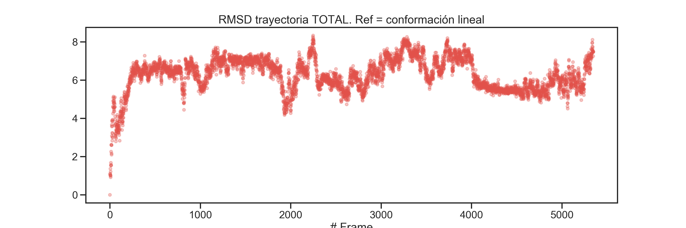
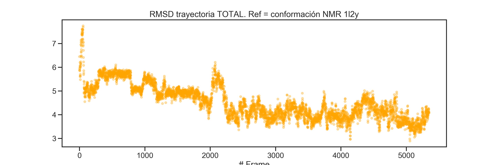
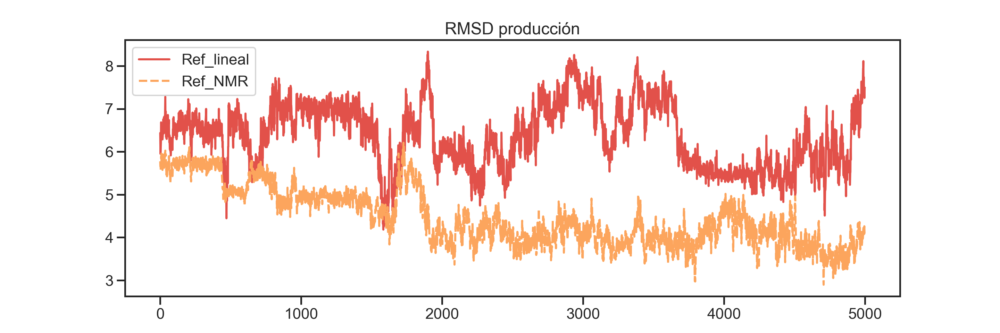
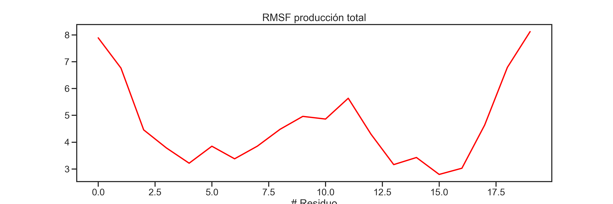
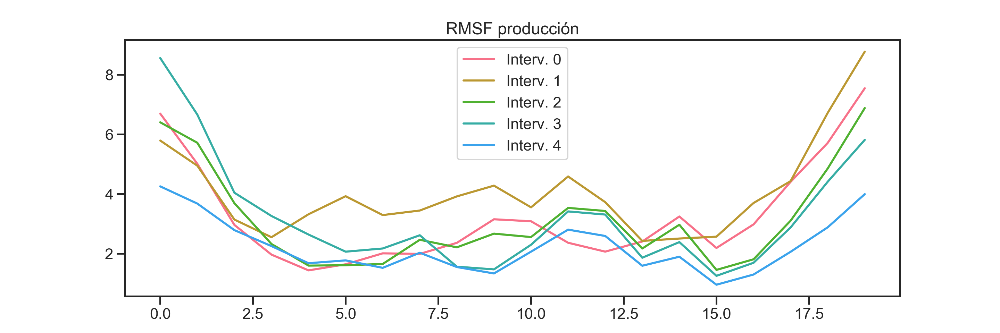

Como primer paso vamos a cargar los datos de la trayectoria de la DM, considerando cada una de las fases realizadas.
Para ello, comenzamos importando el módulo pytraj.
A continuación, cargamos la estructura inicial de la porteína, que corresponde a la conformación lineal a partir de la cual realizamos la minimización y la dinámica molecular.
Observa que la función pyt.load() recibe los parámetros filename y top correspondientes al archivo de coordenadas y de topología, respectivamente.
# Cargamos la restructura inicial, es decir, la estructura lineal del péptido
lineal_strc = pyt.load(
filename = 'dm_sources_1L2Y/1-topologia/tc5b.pdb',
top = 'dm_sources_1L2Y/1-topologia/tc5b.psf')Ahora, si llamamos a la variable cristal_strc, veremos que ésta corresponde a un objeto pytraj.Trajectory con los siguientes atributos:
## pytraj.Trajectory, 1 frames:
## Size: 0.000007 (GB)
## <Topology: 304 atoms, 20 residues, 1 mols, non-PBC>
## Recordemos que podemos utilizar la librería nglview para visualizar la estructura de la proteína:
# Importamos nglview
import nglview as nv
import warnings
lineal_strc_view = nv.show_pytraj(lineal_strc)
lineal_strc_view.background = 'black'
lineal_strc_viewAhora, vamos a proceder a cargar en memoria los archivos de trayectoria dcd de todas las fases de la dinámica. Para ello, es necesario primero definir el archivo de topología que utilizaremos.
f_topology = 'dm_sources_1L2Y/4-run_dm_2/tc5b_wb.psf'
top_psf = pyt.load_topology(f_topology)
top_psf## <Topology: 18869 atoms, 6209 residues, 6190 mols, non-PBC>Este archivo de topoligía incluye a todas las molécuals del sistema, sin embargo, por ahora sólo nos interesa analizar la trayectoria de la proteína, por lo que redefiniremos el archivo de topología para que sólo incluya los átomos de la misma (los primeros 20 residuos del sistema).
## <Topology: 304 atoms, 20 residues, 1 mols, non-PBC>Ahora procederemos a cargar los archivos dcd. Sin embargo, para este análisis cargaremos archivos dcd a los cuales se les ha removido el solvente, con el objetivo de reducir el tamaño de los archivos y poder distribuirlos en línea.
A continuación mostramos el ejemplo de cómo se generaron estos archivos “reducidos” a partir de los dcd originales.
# Para optimizar el análisis, previamente se han extraido de las trayectorias
# únicamente los átomos correspondientes a la proteína y guardado en la carpeta
# 5_traj_analysis
# Un ejemplo de cómo realizar dicha extracción es el siguiente:
_min = pyt.load(filename = 'dm_sources_1L2Y/4-run_dm_2/1_min/tc5b_wb_min.dcd',
top = 'dm_sources_1L2Y/4-run_dm_2/tc5b_wb.psf')
print(_min)
# Ahora guardamos un nuevo archivo de trayectoria:## pytraj.Trajectory, 1 frames:
## Size: 0.000422 (GB)
## <Topology: 18869 atoms, 6209 residues, 6190 mols, non-PBC>
## pyt.write_traj(filename = 'dm_sources_1L2Y/5-traj_analysis/tc5b_PROT_MIN.dcd',
traj = _min[':1-20'],
overwrite=True)
print(F'Archivo guardado:\n{_min[":1-20"]}')## Archivo guardado:
## pytraj.Trajectory, 1 frames:
## Size: 0.000007 (GB)
## <Topology: 304 atoms, 20 residues, 1 mols, non-PBC>
## Ahora ubicamos el directorio y nombre de cada uno de los archivos dcd. Esto incluye también al archivo .pdb con la estructura inicial.
# PDB inicial
f_inicial = 'dm_sources_1L2Y/2-solvatar_wt/tc5b_wb.pdb'
# Archivos de dinámica
dir_traj = 'dm_sources_1L2Y/5-traj_analysis' # Directorio de los archivos
f_min = F'{dir_traj}/tc5b_PROT_MIN.dcd'
f_heat = F'{dir_traj}/tc5b_PROT_SA.dcd'
f_eq = F'{dir_traj}/tc5b_PROT_EQ.dcd'
f_prod = F'{dir_traj}/tc5b_PROT_PROD.dcd'Ahora cargamos cada uno de los archivos utilizando el objeto de topología top_psf. Como ejemplo puedes ver que también es posible usar el parámetro mask para determinar qué átomos deberán ser considerados al cargarse en memoria. Sin embargo, podemos omitirlo en las fases de minimización en adelante, ya que esta selección de los átomso de laproteína ya la hicimos al cargar el archivo de topología.
#Estructura inicial
init_struc = pyt.load(filename = f_inicial,
top = top_psf, mask = ':1-20')
print( F'Estructura inicial: {init_struc.n_frames} frames')
# Minimización## Estructura inicial: 1 framesmin_traj = pyt.load(filename = f_min, top = top_prot_psf)
print( F'Minimización: {min_traj.n_frames} frames')
# Calentamiento## Minimización: 1 framesheat_traj = pyt.load(filename = f_heat, top = top_prot_psf)
print( F'Calentamiento: {heat_traj.n_frames} frames')
# Equilibrado## Calentamiento: 96 frameseq_traj = pyt.load(filename = f_eq, top = top_prot_psf)
print( F'Equilibrado: {eq_traj.n_frames} frames')## Equilibrado: 250 frames# Producción
prod_traj = pyt.load(filename = f_prod, top = top_prot_psf)
print(F'Producción: {prod_traj.n_frames} frames')## Producción: 5000 framesAdemás de cargar los archivos, hemos usado el atributo n_frames que nos dice cuántos frames posee cada tryectoria. En python es posible utilizar las funciones type() y dir() para conocer qué métodos y atributos posee un objeto según la clase a que pertenece.
## <class 'pytraj.trajectory.trajectory.Trajectory'>## ['__add__', '__call__', '__class__', '__del__', '__delattr__', '__dict__', '__dir__', '__doc__', '__eq__', '__format__', '__ge__', '__getattribute__', '__getitem__', '__gt__', '__hash__', '__init__', '__init_subclass__', '__iter__', '__le__', '__len__', '__lt__', '__module__', '__ne__', '__new__', '__reduce__', '__reduce_ex__', '__repr__', '__setattr__', '__setitem__', '__sizeof__', '__str__', '__subclasshook__', '__weakref__', '_allocate', '_append_unitcells', '_boxes', '_estimated_GB', '_frame_holder', '_handle_setting_box_force_velocity', '_iterframe_indices', '_life_holder', '_top', '_xyz', 'align_principal_axis', 'append', 'append_xyz', 'autoimage', 'center', 'copy', 'forces', 'from_iterable', 'iterframe', 'load', 'n_atoms', 'n_frames', 'rmsfit', 'rotate', 'save', 'scale', 'shape', 'strip', 'superpose', 'time', 'top', 'topology', 'transform', 'translate', 'unitcells', 'velocities', 'view', 'visualize', 'xyz']Ahora, con el objetivo de ver la evolución conformacional de la proteína a lo largo de todas las fases, vamos a unir todas las trayectorias en una sola. Esto también nos permitirá guardar una única trayectoria para posteriores análisis.
Primero generamos una lista con los objetos de trayectoria:
# Combinamos todas las etapas para visualizar una única trayectoria
trajs_list = [min_traj, heat_traj, eq_traj, prod_traj]El siguiente paso es usar la lista traj_list para iterar sobre sus elementos.
Para ello vamos utilizar una expresión conosida como list comprehension. Por ahora las usaremos para uardar en una nueva lista el número de frames de cada fase.
# Número total de frames
n_frames_list = [ traj.n_frames for traj in trajs_list ] # Observa la sintaxis
n_frames_list## [1, 96, 250, 5000]## Número total de frames: 5347Ahora crearemos un nuevo objeto Trajectory inicializándolo como una copia del objeto init_struct, al que iremos añadiendo las coordenadas de los objetos de la lista trajs_list usando el método append_xyz:
# Inicializamos la trayectoria con una copia de la estructura inicial,
# que es un objeto de la clase Trajectory de pytraj
full_traj = init_struc.copy()
# Iteramos sobre la lista de trayecorias, añadiendo las coordenadas
# al objeto full_traj
for traj in trajs_list:
full_traj.append_xyz(traj.xyz)
full_traj## pytraj.Trajectory, 5348 frames:
## Size: 0.036339 (GB)
## <Topology: 304 atoms, 20 residues, 1 mols, non-PBC>
## Como vimos en el jemplo de la tayectoria de la minimización, podemos usar la función write_traj(). Observa qué parámetros se requieren para guardar el nuevo archivo.
Bien, ahora podemos comenzar con el análisis de la trayectoria. Si bien, en general debemos enfocarnos en la fase de producción, para este ejemplo comenzaremos observando la evolución conformacional de la proteína a través de todas las fases de la trayectoria.
Primero vamos a superponer todas las conformaciones de la proteína. Para ello, el método superpose realiza moviemientos translacionales y rotacionales de forma iterativa minimizando el RMSD entre todas las confromaciones. Observa que el alineamiento lo realizaremos considerando los carbonos alfa únicamente de los residuos 4 a 17, es decir, hemos omitido los primeros y los últimos tres reiduos de la proteína. Si lo deseas puedes reducir o extender esta selección.
# Superposición de los frames
full_traj.superpose(mask = ':4-17@CA', ref = 0)
# Por default el primer frame es tomado como referencia## pytraj.Trajectory, 5348 frames:
## Size: 0.036339 (GB)
## <Topology: 304 atoms, 20 residues, 1 mols, non-PBC>
## Podemos usar nglview para visualizar la tryectoria con los frames superpuestos.
Ahora procederemos a calcular el rmsd de todos los frames de la trayectoria con respecto a una estructura de referencia.
Como primer ejemplo usaremos la estructura lineal usando el parámetro ref.
# Cálculo del RMSD de la trayectoria total
# tomando como referencia la estructura inicial (lineal)
rmsd_full_REF_lineal = pyt.rmsd(traj = full_traj,
mask = ':4-17,@CA',
ref = init_struc)Para graficar el RMSD importamos las librerías matplotlib y seaborn y establecemos algunos parámetros por default para las gráficas.
# Importamos las librerías y parámetros para generar las gráficas
from matplotlib import pyplot as plt
import seaborn as sns
import pylab
sns.set( context = 'talk', style = 'ticks', palette = "Spectral")
pylab.rcParams['figure.figsize'] = (15, 5)Ahora generamos la gráfica de la trayectoria total:
# Creamos la figura del RMSD de la trayectoria total
plt.scatter( x = range(full_traj.n_frames),
y = rmsd_full_REF_lineal, s = 20, alpha = 0.3 )
plt.title("RMSD trayectoria TOTAL. Ref = conformación lineal")
plt.xlabel("# Frame")
plt.show()
Como es de esperarse, conforme el tiempo de simulación avanza hay un aumento en el RMSD de cada frame con respecto a la conformación inicial.
Ahora bien, para un análisis más interesante usaremos como referencia la estructura por NMR de la proteína, con el objetivo de saber si, a lo largo de la simulación, las estructura de la proteína se aproxima a la estructura experimental.
Para ello cargamos la estructura NMR de la proteína.
# Cargamos la estructura NMR
nmr_strc = pyt.load(filename = 'dm_sources_1L2Y/5-traj_analysis/1l2y_Hs.pdb',
top = 'dm_sources_1L2Y/5-traj_analysis/1l2y_Hs.psf')Calculamos el RMSD de la trayectoria usando como referencia a nmr_strc. Seguido de ello, generamos la gráfica.
plt.scatter( x = range(full_traj.n_frames), y = rmsd_full_REF_nmr,
s = 20, alpha = 0.3, c='orange' )
plt.title("RMSD trayectoria TOTAL. Ref = conformación NMR 1l2y")
plt.xlabel("# Frame")
plt.show()
Como ves, al principio de la simulación la conformación inicial y la estructura por NMR son muy distintas (entre 6 a 8 A), sin embargo, a lo largo de la dinámica y sobre todo en la producción, la conformación de la porteína tiende a ser más parecida a la estructura NMR.
Finalmente, visualicemos únicamente la fase de producción con ambas referencias:
import pandas as pd
# Creamos una tabla con pandas
# Dado que la producción corresponde a los últimos 5000 frames,
# usamos el slicing [-5000:] para extraer esos últimos 5000 datos
rmsd_prod = pd.DataFrame({"Ref_lineal": rmsd_full_REF_lineal[-5000:],
"Ref_NMR": rmsd_full_REF_nmr[-5000:]})
# Sólo por variar, vamos a usar seaborn para generar el gráfico:
ax = sns.lineplot(data = rmsd_prod)
ax.set_title("RMSD producción")
Vamos a finalizar este análisis evaluando el RMSF de la proteína a lo largo de la fase de producción. Para ello, primero vamos a superponer toda la trayectoria a un frame promedio.
# Obtenemos el frame promedio
avg_prod_frame = pyt.mean_structure(traj = prod_traj)
# Y superponemos la trayectoria a dicho frame
prod_traj.superpose(ref = avg_prod_frame, mask = ':3-18@CA')## pytraj.Trajectory, 5000 frames:
## Size: 0.033975 (GB)
## <Topology: 304 atoms, 20 residues, 1 mols, non-PBC>
## Ahora calculamos el RMSF de toda la producción:
rmsf_prod_traj = pyt.rmsf( prod_traj, mask = '@CA' )
# Graficamos
plt.plot( rmsf_prod_traj.T[1], c = 'red')
plt.title("RMSF producción total")
plt.xlabel("# Residuo")
plt.show()
PAra terminar esta sección, un análisis interesante sería ver cómo el RMSF de la proteína va cambiando tomando ciertos intervalos de la producción.
# Ahora calculamos el RMSF a diferentes intervalos de la producción
num_interv = 5
interv_size = int(prod_traj.n_frames / num_interv)
df_rmsf = pd.DataFrame(
{F'Interv. {i}': pyt.rmsf( prod_traj[i*interv_size : (i+1)*interv_size],
mask = '@CA').T[1] for i in range(num_interv)} )Graficamos usando seaborn.
sns.set_palette("husl")
ax = sns.lineplot(data = df_rmsf, dashes = False)
ax.set_title("RMSF producción")
En general, podremos observar que hacia la última parte de la trayectoria, el backbone de la proteína tiende a ser más estable. Continuaremos con más análisis de la trayectoria en la siguiente sección.